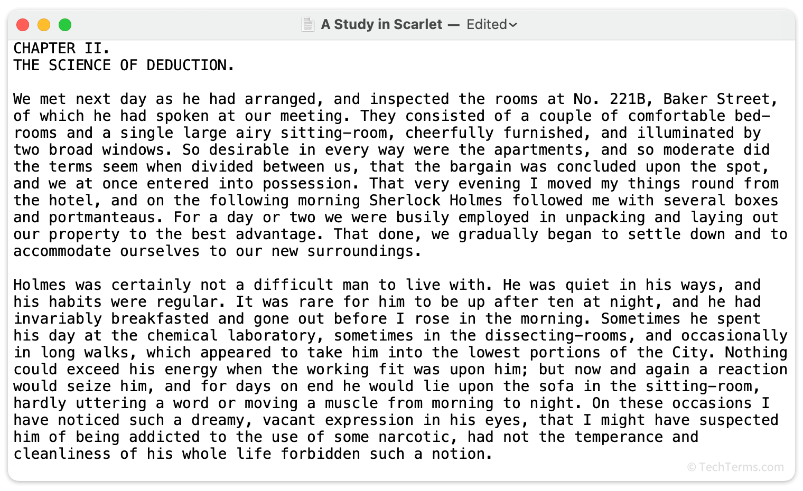
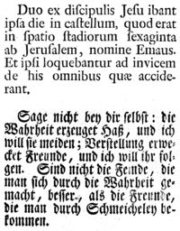

Text v informatice označení pro posloupnost znaků, která je uložena v textovém formátu. V informatice se jedná o odborný technický pojem, kterým je označen zvláštní datový typ (běžnější je string nebo řetězec) nebo datový formát. Text je cokoliv, co je uloženo v textovém formátu (tj. přímo v textových znacích, kódovaných např. v ASCII, ANSI, Unicode, UTF-8…), a to i v případě, že daný textový řetězec (posloupnost znaků) nedává žádný smysl v žádném přirozeném ani formálním jazyce, a dokonce i v případě, že délka textu je nulová (0 znaků). Podstatný je zde typ nebo formát, kde pevnému počtu bajtů (počítačových slov) odpovídá vždy konkrétní znak dané abecedy. Text (dle jazykovědy, tj. posloupnost slov, nesoucí význam) nakreslený v obrázku (tj. např. vyfotografovaná cedule s nápisem) není z pohledu informatiky „prostým textem“ (anglicky plain text), neboť „z pohledu počítače“ se již nejedná o soubor písmen, ale o binární data grafických objektů (různě barevné body, křivky…) respektive se jedná o datový typ nebo formát, jenž není z hlediska informatiky považován za textový. V tomto formátu text není zakódován po jednotlivých znacích dané abecedy v daném počtu bajtů. Nicméně, dekódování původního textu z různých grafických netextových formátů je dnes běžně možné pomocí specializovaného software, např. pomocí OCR programů s relativně vysokou mírou přesnosti. Výhoda textového formátu, obvykle v porovnání s binárním, je, že je lidsky a strojově čitatelný (vyhledávání), editovatelný běžnými editory (XML) a přenositelný po síti (uuencode). Nevýhoda je, že je delší – paměťově náročnější.


vedlejsi